Since a long time I wanted to build my own computer, but I thought I would never be able to do that. After Ive seen the "RC2014" Computer, I realized that it's not that complicated and decided to recreate this Computer. The "Cactus" computer (which uses a 6502 CPU and features a nice looking front panel) heavily inspired this Computer, especially the front panel. So I started building it in the Summer of 2018, and slowly completed all cards. After almost three years later, I finally managed to get the computer working. If you wonder about the name, I have choosen this (unordinary) name because 1. I wanted a nice abbreviation 2. I wanted it to have "microcomputer" in it and 3. I wanted the name to indicate that it can perform all kinds of tasks (for example run BASIC, CP/M or just any assmbler code; be programmed through a serial terminal or the frontpanel; control all kinds of electronics through I/O ports) and 4. I don't want the abbreviation to be easily confound with something that already uses this term.
I decided to use a 19" Subrack and eurocards for it, with a 64-Pin Connector (DIN 41612) at the back.
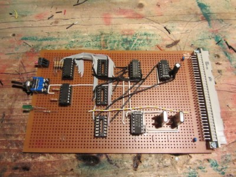
This table shows all the cards (although some schematics and pictures are outdated, up-to-date schematics can be found further below):
| Name | Version | Description | Specs | Picture | Schematic |
|---|---|---|---|---|---|
| PSU | 1.0 | Power Supply Unit | Input: ~+7-25V Output: +5V Current: ~1,5A |
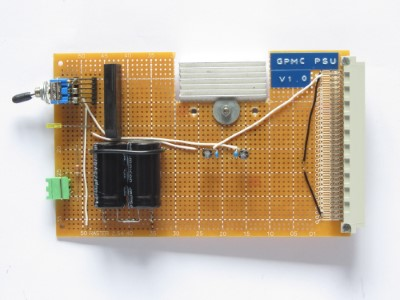 | None(It's simple!) |
| CPU | 1.0 | Central Processing Unit | Z80 CPU Additional /MEMRD, /MEMWR, /IORD & /IOWR |
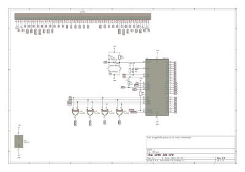 | |
| CLK | 1.0 | Clock Generator The clock speed is controlled by a 4-bit hexadecimal rotary switch whose output is demultiplexed(inverted output) and used to enable the corresponding clock speed by a NOR gate. (Wrong gates in schematic) To improve the signal quality it is sent through a NOT gate. |
10 different clock speeds Manual, ~10Hz, 0,1536-7,3728MHz LED clock signal indicator |
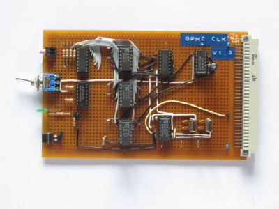 | 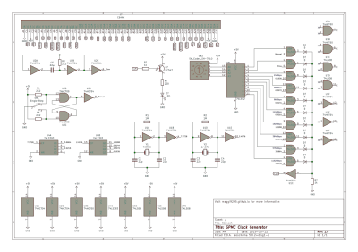 |
| RAM | 1.0 | Random Access Memory | 56k (64k paged) Two 62256's |
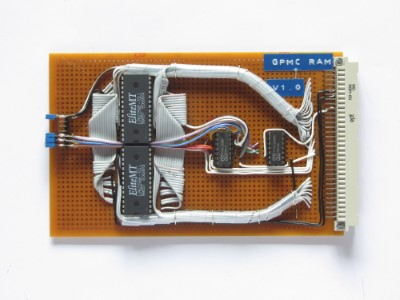 | 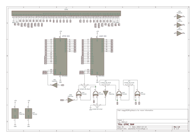 |
| ROM | 1.0 | Read Only Memory Note that the current circuit and the board have an error in it, pins 1 & 2 of the 74'393 need to be swapped and PAGE has to be conected to pin 3 instead of 6. |
Accepts 2716 to 27512 Can be paged in and out |
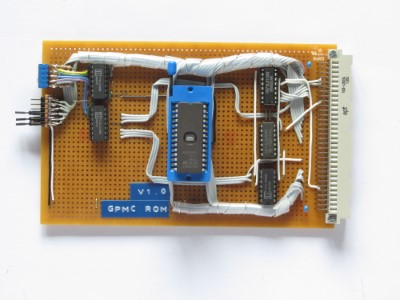 | 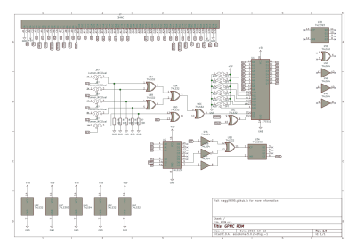 |
| SIO | 1.0 | Serial Input Output | Z80B SIO CTS/RTS Handshake 2x RS-232 ports |
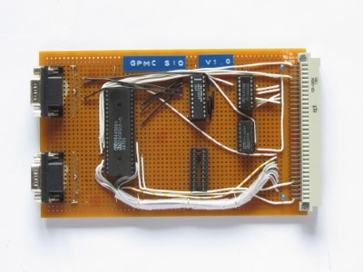 | 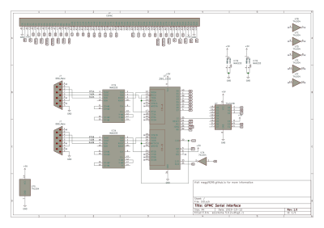 |
| FPL | 1.0 | Front Panel Logic This board is used to control the front panel. The pictures is outdated; it already has two circuit boards piggybacked onto each other. It still has a few faults, but the indicators as well as memory deposit and examine already work. |
Displays current bus status Allows examine and deposit up and down |
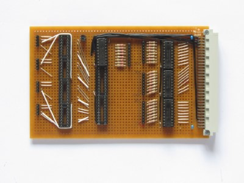 | 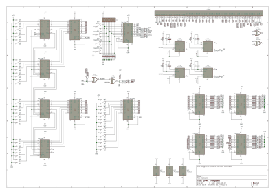 |
For almost all cards I used the schematics of the RC2014, although I modified some a bit and expanded the bus output. If you want to have a look at the KiCad schematics you can download them here. I try to keep them up to date, but some might differ from the current circuit. You can see the bus layout here:
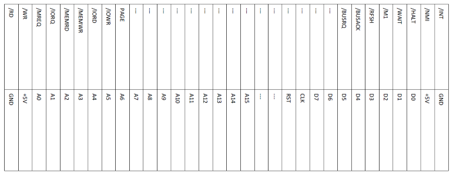After a lot of troubleshooting I finally got the computer working. Here are a few of the problems I found and fixed:
- The old "backplane", which was essentially just connectors interconnected by a ribbon cable, had many loose connections and made the whole computer malfunction. After replacing it with a real backplane I did not had another backplane-related problem.
- The Page circuitry was wired up completley wrong and caused the memory to malfunction.
- I forgot to connect the pull-up resistors on the CPU card with +5V, causing the CPU to malfunction.
- The RAM decoding circuit was wired wrong a couple of times, I had to redo it in order for the RAM to get decoded correctly.
In order to test the basic computer, I wrote a simple program that increases register A and outputs it to an 8-bit output port. After some small problems with the output-port circuitry and fiddling around with jumpers I got it working and was able to confirm the computer working. After that I added RAM and SIO and replaced the ROM with BASIC. To my surprise I was greeted with BASIC on the terminal! However, after a bit of testing I found out that the "OUT" statement sometimes crashes the computer. But not randomly, for example never when I output 00H or FFH to port 00H, but always when I output 01H or 04H to port 00H. I have no idea what causes the problem, there doesn't seem to be a similar problem existing on the RC2014.
But after all, I am quite happy that I built my own working RC2014. It was a fun project and I hope I can expand it even further. I still need to fix a few issues with the RC2014 front panel and the problem that some "OUT" statements crash the computer.
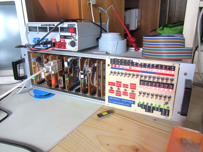 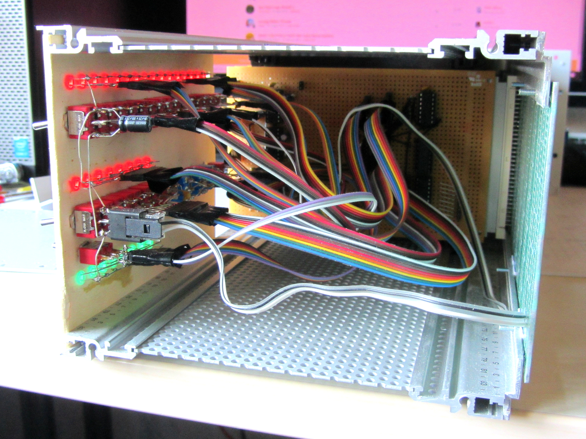
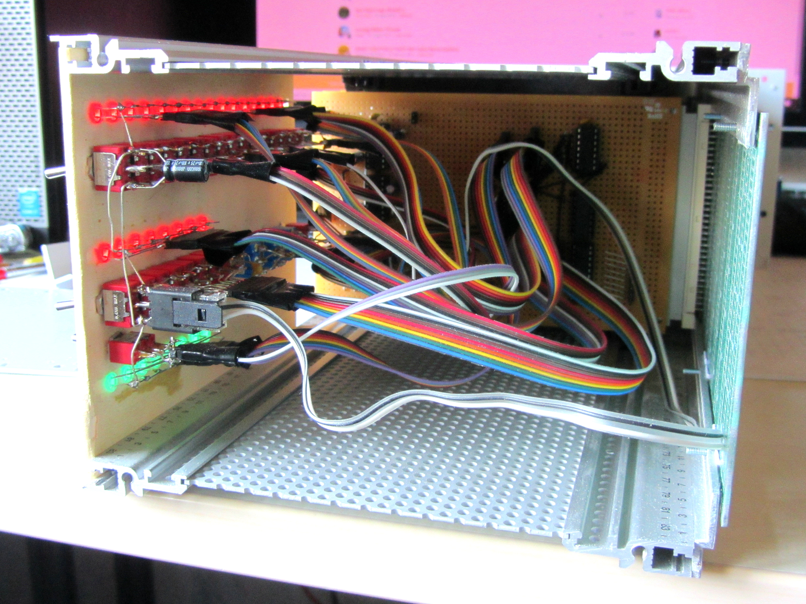
The first picture shows the completed case and the computer up and running; the second one the left sidepanel removed and the third one the wiring of the frontpanel.
This page was last modified .
{kind=link}
{kind=link}
{kind=link}
{kind=link}
{kind=link}
{kind=link}
{kind=link}
{kind=link}
{kind=link}
{kind=link}
{kind=link}
{kind=link}
{kind=link}